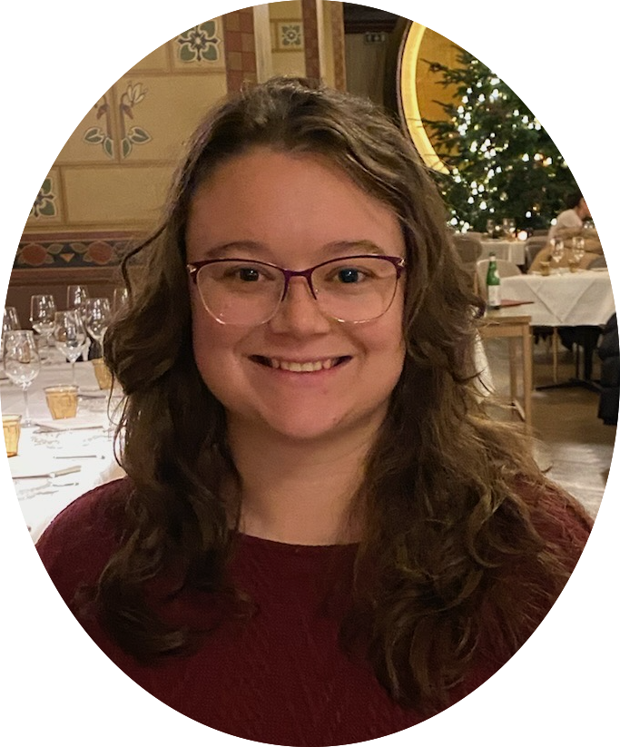

About Me
I am currently in a full-stack Developer's course at Rutgers University. I have worked as the Executive Assistant to the family dairy goat farm, CU@ Lil Red Barn, for the last 10 years. I obtained my under-graduate degree in exercise science from the University of Lynchurg. I became a patient myself after dislocating my hip bouldering in Wyoming and spent a lot of time on the computer during recovery. After recovery I worked on the family farm, taking some time off from school, to determine what I wanted to do. I was torn between comptuer science which I had come to love, and the degree I already had. I decided to make a career change and go into full-stack development.
My Projects
Red Yarn Insurance
CU@LILREDBARN Dairy Farm